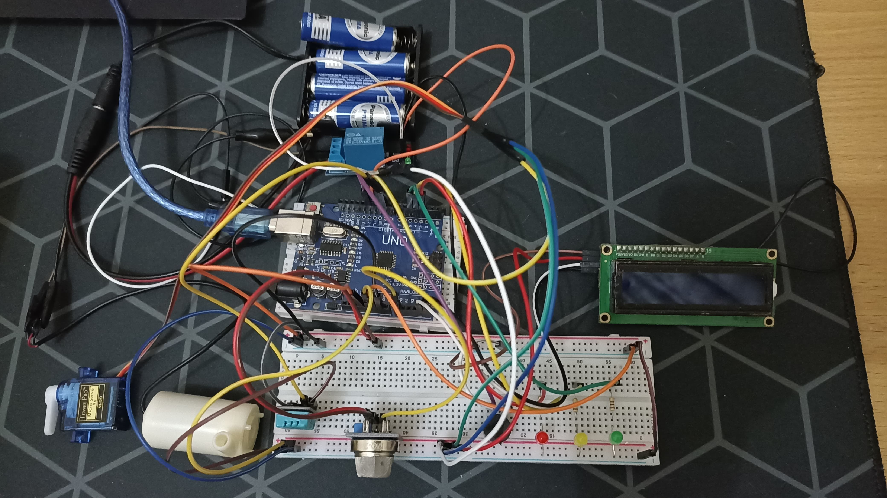

Proyek "Fire Alarm" adalah sistem deteksi api berbasis mikrokontroler yang dirancang untuk memberikan peringatan dini terhadap potensi kebakaran. Alat ini memantau perubahan suhu dan konsentrasi gas di lingkungan sekitar.
Tujuannya adalah untuk meningkatkan keamanan di area tertentu (misalnya rumah, kantor kecil, atau gudang) dengan menyediakan sistem alarm yang responsif dan terjangkau. Proyek ini mengatasi kebutuhan akan sistem keamanan kebakaran dasar yang efektif dan mudah diimplementasikan.
Sistem "Fire Alarm" ini berhasil mendeteksi kenaikan suhu drastis dan keberadaan gas berbahaya dengan cepat. Alarm visual dan audio akan aktif, memberikan waktu yang lebih cepat untuk tindakan pencegahan. Potensi dampak positifnya adalah mengurangi risiko kerusakan properti dan melindungi nyawa melalui peringatan dini.